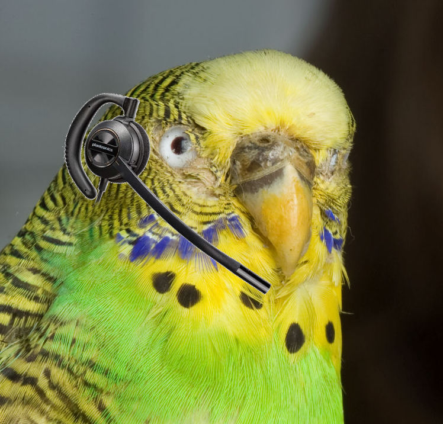
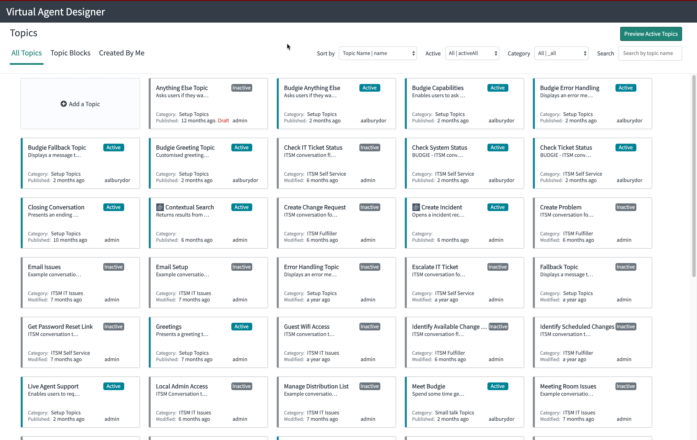
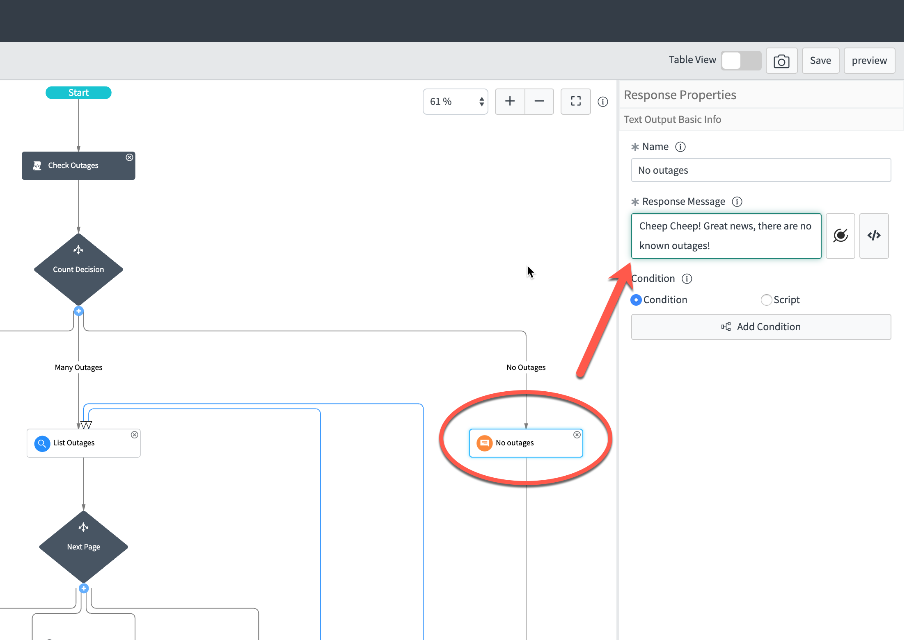
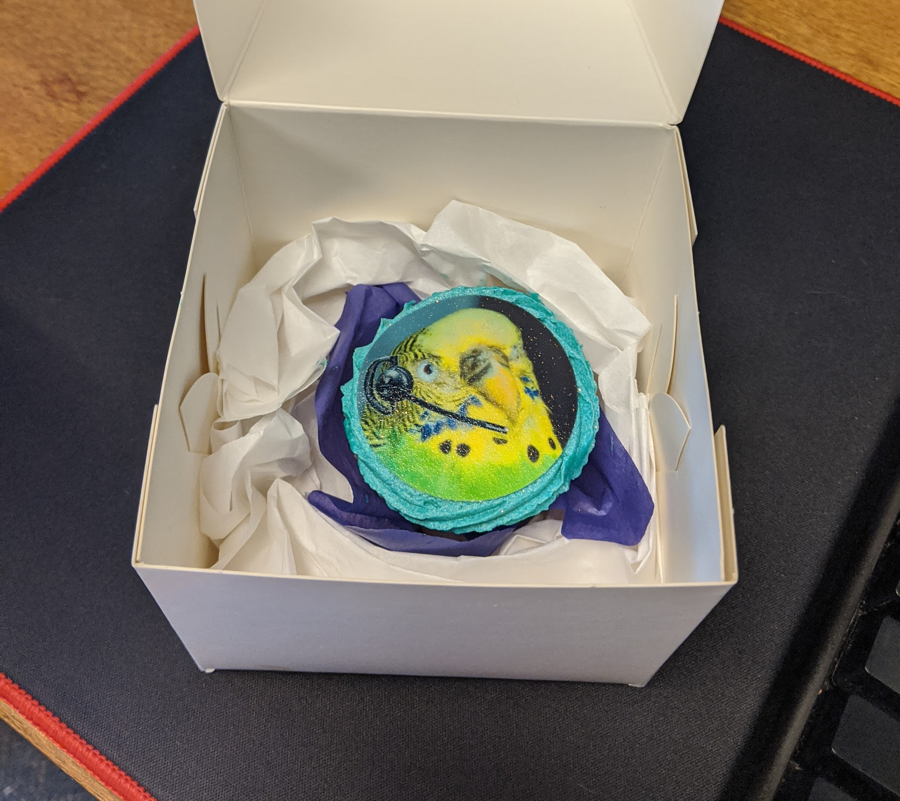
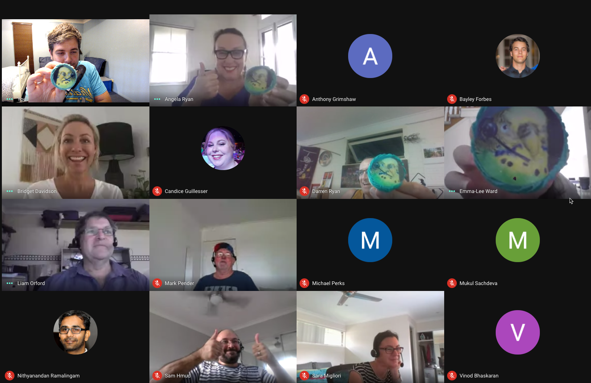

class: center, middle #"Fly" with Virtual Agent [SN Dev Meetup April 2020] --- layout: false class: center, middle # Who Am I? Andrew Albury-Dor, SN Technical Lead @ Auto & General --- class: basic # What Did We Do? - Launched VA inside a 2 week sprint - Used OOB ITSM Interactions - Customised enough to give it a personality --- class: center, middle # Meet Budgie!  ??? Budget Direct leads to Budgie --- class: basic # Where It All Started - [Now Learning](https://nowlearning.servicenow.com) Micro Certs - Came up with the name on a whim - Configured the basic OOB experience on my [PDI](developer.servicenow.com) - Left it alone for a few months... --- class: basic # And Then... - While talking to someone from the Service Desk they mentioned Chatbots - I showed them Budgie running in my PDI - They loved it and insisted we show TL / Manager - They also loved it, and really loved that my estimate to live was ~2 weeks --- class: center, middle # What Have I Got Myself In To? --- class: center, middle # Nothing. # I'm a Good Developer* .footnote[[* That's what my wife tells me at least]] --- name: list1 class: basic # What did I have to do? - Agree on a Minimum Viable Product. - Not that difficult. Let's go basic ITSM and see how much I can fit into a sprint --- name: list2 template: list1 - Turn a "Virtual Agent" into a talking birb you want to scritch - Yes, I said Birb, and scritch. [(citation)](https://www.youtube.com/watch?v=iLBRWmiUFZ4) --- name: list3 template: list2 - Learn the Virtual Agent Builder tool (snazzy, but odd) --- name: list4 template: list3 - Use the Virtual Agent Builder tool --- name: list5 template: list4 - Find copyright-free pictures of budgerigars --- name: list6 template: list5 - Spend too little time Photoshop-ing on a headset --- name: list7 template: list6 - Spend too much time looking for funny ~~Jiffs~~ Gifs --- class: center,middle # Let's Do The Thing ### or, How I Did The Thing --- name: steps1 class: basic # Initial Steps 1. Check for *The L Word* - We were talked up to ITSM Premium which includes Virtual Agent --- template: steps1 name: steps2 2. Activate The Plugins (on Dev - of course) - Glide Virtual Agent (com.glide.cs.chatbot) - ITSM Virtual Agent Conversations (com.snc.itsm.virtualagent) - ITSM NLU Model for Virtual Agent Conversations (com.snc.itsm.nlu) --- name: steps3 template: steps2 3. Make him Purdy <3 - Update the Branding and Chatbot Profile --- name: steps4 template: steps3 4. Enable / Copy and Edit all the Conversations ("Topics") we wanted to use - Check Ticket Status - Check System Status - Raise a Ticket - Raise a Request - Search KB --- name: steps5 template: steps4 5. Update all the "Setup Topics" and default messages to be more "small birb appropriate" --- class: basic, center # There are a lot of topics...  --- class: basic, center # Simple Customisation  --- class: center, middle # Just Show Me The Damn Bird Already! --- class: basic, center # Demo <img src="budgiedemo.gif" width="50%" height="50%"/> .footnote[[Live Demo](https://dev90708.service-now.com/sp)] --- class: basic, center # Obligatory Cake Shot  --- class: basic, center # Obligatory Cake Shot  --- name: less1 class: basic # What did I ~~learn~~ break and have to fix? --- name: less2 template: less1 - Documentation for VA is a little light on technical details - (There's a few APIs which aren't documented at all, and they seem to be quite useful) --- name: less3 template: less2 - There are a whole bunch more System Properties than in the "Properties" module - see `com.glide.cs` --- name: less4 template: less3 - Mark Roethof is *The Guy* when it comes to VA (And another Developer MVP!) --- name: less5 template: less4 - People love characters! Something I came up with on a whim really resonated with everyone. --- name: less6 template: less5 - Don't plan deploys around your renewal dates :( ??? We had the change logged (HA! CHANGE!) and ready to go on a Friday afternoon, but couldn't enable it because our subscriptions hadn't pulled through yet. GARETH! Ended up doing it on a Saturday :( --- class: middle, center # So What, Do People Use It? --- class: middle, center # ...Kinda? --- name: oc1 class: basic # Outcomes --- name: oc2 template: oc1 - Since launch (4 weeks ish?) we have had ~130 conversations Started --- name: oc3 template: oc2 - Only 20 came to a complete end (not abandoned etc) --- name: oc4 template: oc3 - Only 2 incidents have been logged using Budgie --- name: oc5 template: oc4 - Only 1 person has completed a survey, and it was... well I don't talk about it --- class: middle, center # BUT(T) --- class: middle, center ### We haven't actually "Sold" budgie. ??? After all the Covid bizniz, he's been left in his cage for now. We were planning a big launch, but it has been rather soft. --- class: middle, center # ANYWAY. --- class: middle, center # To The Future! --- name: future1 class: basic # What's to come? --- name: future2 template: future1 Obviously there's a lot Budgie can do. We have plans to: --- name: future3 template: future2 - Integrate him to Robotic Process Automation to solve repeatable issues for users (Picture a bird yelling at Alexa) --- name: future4 template: future3 - Let him out of his cage via APIs to **Get. Stuff. Done. Cheep.** --- name: future5 template: future4 - Teach him the local vernacular *Maaaate* (Update the NLU to be more in line with our business language) --- name: future6 template: future5 - Give him a phone with Slack so he can let people know when jobs are assigned to them or help people directly in-app. --- name: future7 template: future6 - Get stickers and (maybe) plushies made! (Once we start marketing him a bit more) --- name: future8 template: future7 - Find more gifs, of course ;) --- class: middle, center # Thanks for coming to my ~~TED~~ sndev talk! --- class: basic # Questions? Other stuff I've been working on: - We went live with Orlando Patch 2 last Thursday. It went great. - We are using Agile 2.0 in platform for our ServiceNow dev work - I've been digging in to [Now Experience](https://developer.servicenow.com/dev.do#!/guide/now-experience) on [My Blog](https://andrew.alburydor.com) - I was published on the [ServiceNow Developer Blog <3](https://developer.servicenow.com/blog.do?p=/post/2020q1-mvp-content/) <br /> <br /> <div align="center"> ### You can view this slidedeck online: #### https://andrew.alburydor.com/presentations/april2020 </div> .footnote[Thanks for having me!]